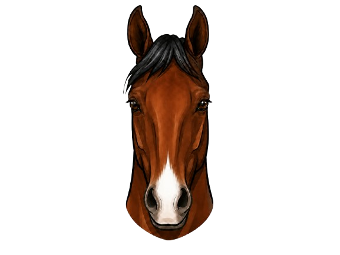

Registration and Records
Breed registries record face markings as part of a horse’s official identity. These markings stay with the horse for life.
Face markings are one of the easiest ways to identify a horse. They help people describe horses clearly, tell horses apart, and keep accurate records.
Every horse has a unique face. Some have large white markings, while others have small markings or none at all. These differences are what make each horse easier to recognize.
Face markings are used in everyday horse care, veterinary records, breed registration, and general barn management. Learning to recognize and describe them is an important horse skill.
💡 Did You Know
Face markings have been used to identify horses for hundreds of years. Today, they are still recorded on registration papers, vet records, and travel documents to help confirm a horse’s identity.
Saying a horse has “a white mark on its face” is not enough. Clear face marking terms help people identify the correct horse in different situations.
Breed registries record face markings as part of a horse’s official identity. These markings stay with the horse for life.
Veterinary and travel documents often include face markings to help confirm identity and avoid mistakes.
If a horse is lost or separated from its owner, a clear description of its face markings helps people recognize the correct animal.
At shows and events, face markings help match horses to their records and confirm the correct horse is entered.
A face marking is any white area on a horse’s face. These markings happen when the skin in that area does not produce pigment, which is what gives hair its color.
Most face markings are present at birth and stay the same throughout the horse’s life. This makes them useful for identification over time.
Pigment is what gives skin and hair color. Where pigment is not produced, the hair grows in white, creating a face marking.
